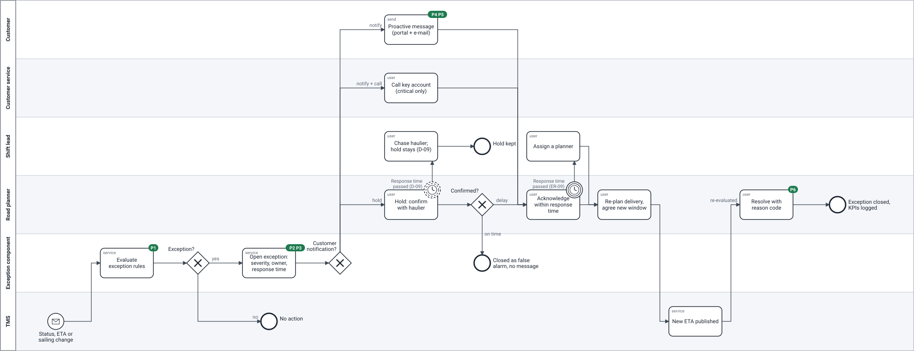
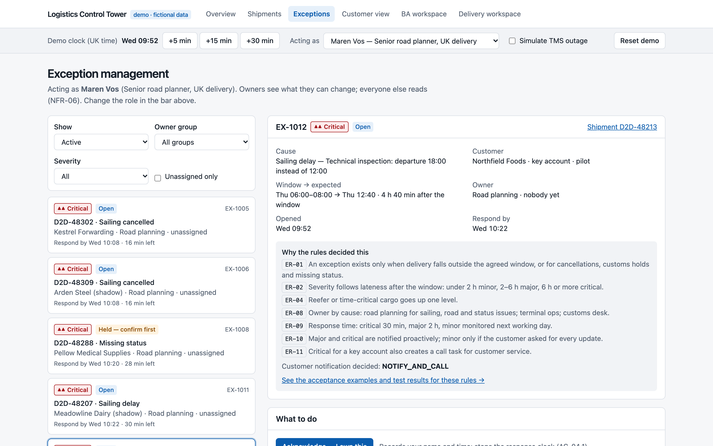
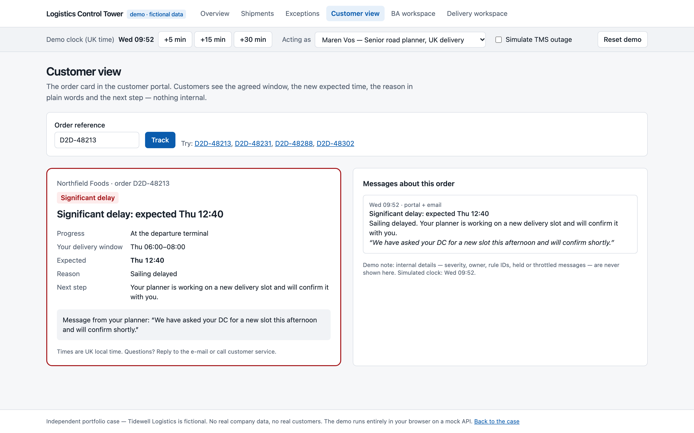

Business analysis case study · short-sea & door-to-door logistics
How a fictional operator could stop its customers from learning about delays at the gate — from a framed problem and a business case, through workshops, rules, backlog and design, to acceptance testing and a controlled go-live.
Independent portfolio case. Tidewell Logistics is fictional. People, workshops, sprints and acceptance tests are simulated; figures are illustrative assumptions. Results are labelled proposed (business case), simulated (fictional delivery) or measured (automated tests actually run in the repository). Nothing here was deployed in a real organisation. Repository: github.com/phlppgdfry/shipment-exception-management-business-analysis
Since its new transport management system (TMS) went live, Tidewell's customers can see statuses in a portal — but not whether their agreed delivery window is at risk. Only 22% of late deliveries were announced before the window started; "where is my load?" was 38% of all customer contacts. Three managers asked for three solutions: a tracking page, e-mails to key accounts, and "nothing that adds work".
The analysis showed that the gap was not a missing screen but missing rules: what counts as late, how serious it is, who acts and who tells the customer. The recommended option is a small exception component next to the TMS: rules decide severity, owner and response time; planners work from one list; customers get one clear message. Because its value rests on one uncertain number, the sponsor funded a six-week pilot with a stage gate rather than the full build.
22% → ≥90%
major/critical delays told before the window proposed
−35%
WISMO contacts vs. a control group proposed
13.5 mo
payback; pessimistic case ±31 months proposed
100%
automated checks passing in the repository at the time of writing — see the test-results page measured
| Who | Pain today |
|---|---|
| Customer | Plans docks around the window; hears of delays at the gate — "rather bad news at 10 than no news at 4" |
| Customer service | ±1,250 WISMO contacts a week; a "switchboard" between customer and planner |
| Road planner | Notices delays by chance; copies orders into an Excel sheet; interrupted by calls |
| Account manager | Hears about problems from the customer |
| Finance | ±55 missed slots a week at ±€140; credit notes without a reason |
The customer calls → nobody told them → customer service did not know either → nobody owns "telling the customer" → every TMS change looks the same, so people filter by gut feeling → there is no shared definition of late, no severity and no owner.
If most WISMO calls concerned on-time orders, a status page would be the fix. A sample showed ±70% were about late or at-risk orders.
Eight interviews, a shadowed morning shift and a two-week contact-reason tagging exercise produced a baseline and five contradictions between teams. Instead of writing one person's view into a process diagram, the analyst ran a three-hour big-picture event storming with planners, customer service, an account manager, the customs desk, the Product Owner and a developer. Disagreements became six hotspots, each with a decision owner and a date.
| Option | Score | Verdict |
|---|---|---|
| O1 Add a customer-service agent | 2.45 | treats the symptom |
| O2 Standard TMS e-mails | 3.10 | ±9 changes per order, ±0.3 relevant: noise |
| O3 Exception management | 3.95 | recommended, as a pilot |
| O4 External visibility platform | 2.85 | later, for consignees |
"Tell key accounts everything" and "no message storm" looked like opposites. A concrete story from each side revealed the needs behind them — never surprise a key account with something serious and no message that doesn't change the customer's day. Severity served both. The Product Owner decided (D-02); the analyst prepared options and consequences.
Artefacts: problem statement, capability map and SWOT, business case with sensitivity, KPI tree, stakeholder map and RACI, interview notes, event-storming board, decision log, assumption/risk/dependency registers, research register.
The AS-IS (BPMN 2.0) showed that the information exists — the sailing system knows a delay within minutes — but is lost between people. The TO-BE adds rules and ownership, not a tracking screen.

| Rule | Decision |
|---|---|
| ER-01 | An exception exists only when expected delivery is after the end of the agreed window (or a cancellation, customs hold or missing status) |
| ER-02/03/04 | 1–119 min minor · 120–359 major · ≥360 or next day critical · reefer and time-critical one level up |
| ER-07 | Missing status is held until a planner confirms with the haulier — no false alarms |
| ER-09 | Respond within 30 min (critical) / 2 h (major), otherwise escalate to the shift lead |
| ER-10/11 | Major and critical are notified; critical for a key account also creates a call task |
| ER-12/13 | At most one message per order every 2 h unless worse; "back on schedule" only if told before |
The thirteen rules live in one table and one code module. Their thirty Given/When/Then examples run as tests — so when the PO changes a threshold, the test run shows which decisions change meaning.
Five business requirements, seventeen functional and nine non-functional requirements, each with an ID and a verification method, trace from pain point to KPI:
P5 "customer finds out at the slot" → BR-1 → FR-06, FR-10 → ER-10, ER-12 → US-05, US-07 → AC-01.6, AC-07.1, BAT-07/08 → K1, K3, K8
With the Product Owner, the backlog was ordered by WSJF: when everything was "Must", it surfaced small, high-value items (making the delivery window mandatory scored highest — 28% of orders had none). Dependencies then set the build order. Release 1 = 36 points, two sprints, five pilot customers on two routes, behind a feature toggle.
| Decision | Owner |
|---|---|
| What counts as late (D-01) | PO |
| Who is told what (D-02) | PO |
| Build small vs. wait for supplier (D-03) | PO + architect |
| Missing status: hold first (D-04) | Road planning lead |
| No consignee messages yet (D-05) | DPO + commercial |
| Pilot and stage gate (D-07) | Sponsor + PO |
The analyst is responsible for much and accountable for little: scope, priority and go-live stay with the PO.
Personas and journey maps located the moments that matter: the planner must trust the severity, and the customer's message must be clear and in UK local time. The planner workbench and customer messages were designed in Figma; a working control tower demo then implemented the release on the same rule module, with a guided ten-step scenario.


For developers and architects, the analysis includes a conceptual architecture (proposed vs. implemented), an OpenAPI 3.1 contract, idempotency and retry rules, a data model, state machines and a role matrix. Building the demo was itself a review: it exposed five open questions the specification had missed — such as an exception that recovers before anyone acknowledged it — and a privacy leak in the first customer API, fixed with a public message projection and a test.
Business Acceptance Testing with key users — deliberately including the sceptical senior planner — found six issues. Three of four majors came from people reading real messages in their own context; the team's tests had passed. One came from the analyst's own refinement answer (throttling per exception instead of per order) and became a retrospective action. Sign-off with two known issues, each with a workaround, owner and date.
Thirteen go/no-go criteria with an owner and evidence each; two days in shadow mode; customers switched on one by one on a Monday; rollback rehearsed in four minutes; hypercare thresholds; a support article that answers "rule or bug?".
| Suite | What it proves |
|---|---|
| Rule examples (node:test) | 30 decision examples + coverage and monotonic-threshold checks |
| Engine & contract (Vitest) | lifecycle, permissions, idempotency, API responses vs. OpenAPI |
| Browser (Playwright + axe) | the full scenario, workbench behaviours, all routes on desktop and mobile, WCAG 2.2 AA automated checks |
| Repository gate | every ID defined and referenced correctly; traceability; BPMN validity |
Exact counts, run date and commit: docs/09-acceptance/test-results.md. CI runs them on every push.
Fictional organisation and simulated delivery; no real TMS, e-mail or load testing; architecture and privacy controls not reviewed by real experts. The case shows how the analyst works and decides — it is not a substitute for team experience.